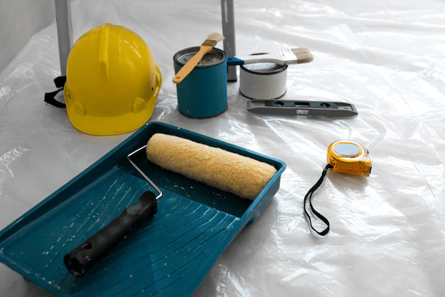
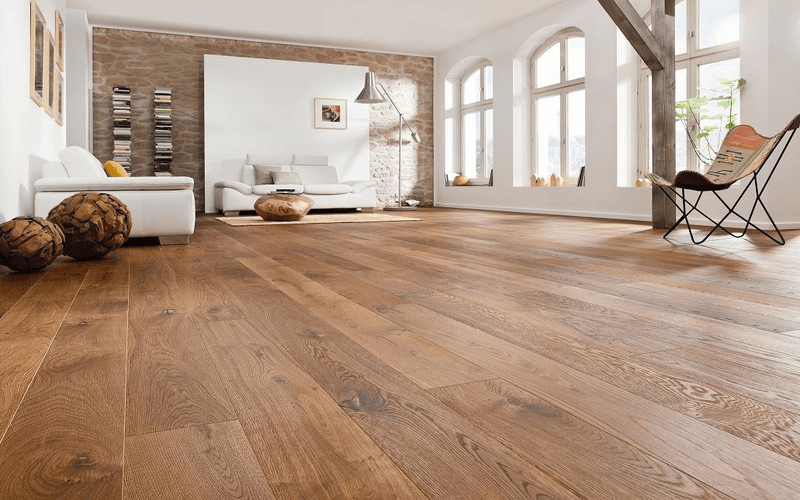
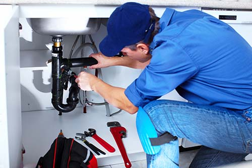
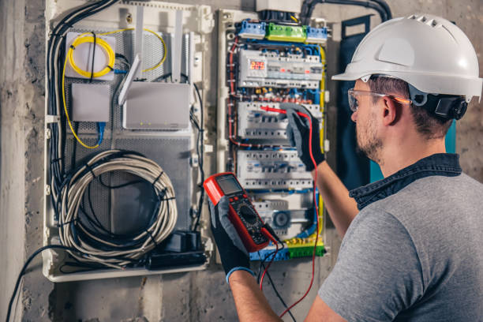
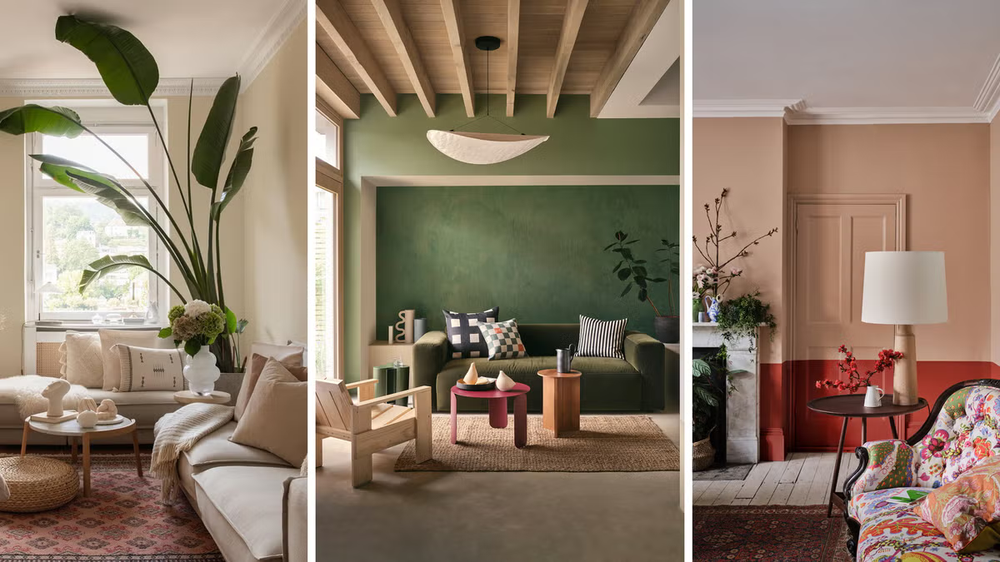
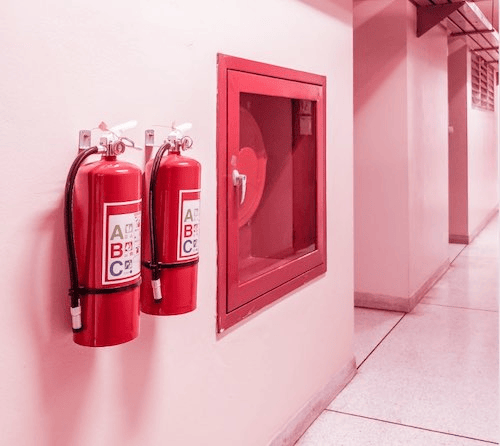

Servicios Adicionales
Servicio de pintura
En Renueva Hogar, ofrecemos un servicio de pintura profesional que transforma completamente el aspecto de tu hogar. Nuestro equipo de pintores expertos utiliza materiales de alta calidad y técnicas avanzadas para garantizar un acabado impecable y duradero. Ya sea que desees renovar el color de tus paredes, techos o exteriores, nos aseguramos de que cada proyecto se realice con precisión y atención al detalle. Además, ofrecemos asesoramiento personalizado para ayudarte a elegir los colores y acabados que mejor se adapten a tu estilo y necesidades.
Nos especializamos en una amplia gama de servicios de pintura, incluyendo la eliminación de gotelé, alisado de paredes, y la aplicación de pinturas decorativas. Entendemos que cada hogar es único, por lo que adaptamos nuestros servicios a tus preferencias específicas, asegurando resultados que superen tus expectativas. En Renueva Hogar, estamos comprometidos a brindarte un servicio de pintura que no solo embellezca tu hogar, sino que también mejore su valor y confort.
- Pintura Interior
- Pintura Exterior
- Pintura de techos
Suelos de madera
En Renueva Hogar, ofrecemos una amplia gama de suelos de madera que combinan elegancia y durabilidad. Nuestros suelos de madera están disponibles en diversas tonalidades y acabados, adaptándose a cualquier estilo de decoración. Ya sea que prefieras el cálido encanto del roble, la sofisticación del nogal o la modernidad del bambú, tenemos la opción perfecta para ti. Además, nuestros suelos son tratados con los mejores productos para garantizar su resistencia al desgaste y su fácil mantenimiento, asegurando que tu hogar luzca impecable durante años.
Nuestro equipo de expertos en Renueva Hogar se encarga de todo el proceso de instalación, garantizando un acabado perfecto y duradero. Nos enorgullecemos de ofrecer un servicio personalizado, asesorándote en la elección del suelo de madera que mejor se adapte a tus necesidades y preferencias. Desde la selección del material hasta la instalación final, estamos contigo en cada paso del camino para transformar tu hogar en un espacio acogedor y elegante. Confía en nosotros para darle a tus suelos el toque de distinción que merecen.
- Parquet
- Tarima flotante
- Suelos laminados
- Suelos ecológicos
Servicio de Fontanería
Nos especializamos en ofrecer soluciones de fontanería de alta calidad para asegurar el correcto funcionamiento de todas las instalaciones de agua en tu hogar. Nuestro equipo de fontaneros profesionales está capacitado para manejar desde pequeñas reparaciones, como la reparación de grifos y desatascos, hasta instalaciones completas de sistemas de fontanería. Utilizamos materiales de primera calidad y técnicas avanzadas para garantizar resultados duraderos y eficientes, brindándote la tranquilidad de saber que tu hogar está en buenas manos.
Atención Personalizada y Servicio de Emergencia 24/7
Entendemos que los problemas de fontanería pueden surgir en cualquier momento, por eso en Renueva Hogar ofrecemos un servicio de emergencia disponible las 24 horas del día, los 7 días de la semana. Nuestro compromiso es proporcionar una atención rápida y efectiva, minimizando las molestias y daños en tu hogar. Además, ofrecemos asesoramiento personalizado para ayudarte a elegir las mejores soluciones de fontanería que se adapten a tus necesidades y presupuesto. Confía en nosotros para mantener tu hogar seguro y funcional en todo momento.- Reparación de tuberías
- Instalación de grifos
- Cambio de radiadores
- Desatascos
- Instalación de sanitarios
Instalaciones eléctricas
En Renueva Hogar, ofrecemos una amplia gama de suelos de madera que combinan elegancia y durabilidad. Nuestros suelos de madera están disponibles en diversas tonalidades y acabados, adaptándose a cualquier estilo de decoración. Ya sea que prefieras el cálido encanto del roble, la sofisticación del nogal o la modernidad del bambú, tenemos la opción perfecta para ti. Además, nuestros suelos son tratados con los mejores productos para garantizar su resistencia al desgaste y su fácil mantenimiento, asegurando que tu hogar luzca impecable durante años.
Nuestro equipo de expertos en Renueva Hogar se encarga de todo el proceso de instalación, garantizando un acabado perfecto y duradero. Nos enorgullecemos de ofrecer un servicio personalizado, asesorándote en la elección del suelo de madera que mejor se adapte a tus necesidades y preferencias. Desde la selección del material hasta la instalación final, estamos contigo en cada paso del camino para transformar tu hogar en un espacio acogedor y elegante. Confía en nosotros para darle a tus suelos el toque de distinción que merecen.
- Parquet
- Tarima flotante
- Suelos laminados
- Suelos ecológicos
Accesorios y decoración
En Renueva Hogar, sabemos que los detalles marcan la diferencia. Por eso, ofrecemos una amplia selección de accesorios y elementos decorativos que transformarán cualquier espacio en un lugar acogedor y con personalidad. Desde cojines y alfombras hasta lámparas y cuadros, nuestros productos están diseñados para complementar y realzar la belleza de tu hogar. Cada pieza ha sido cuidadosamente seleccionada para ofrecerte calidad y estilo, permitiéndote crear ambientes únicos y llenos de vida.
Nuestro catálogo incluye una variedad de estilos y tendencias para que encuentres los accesorios perfectos que se adapten a tu gusto y necesidades. Ya sea que busques un toque moderno, rústico o clásico, en Renueva Hogar tenemos lo que necesitas para darle ese toque especial a cada rincón de tu casa. Además, nuestro equipo de expertos está siempre disponible para asesorarte y ayudarte a elegir los mejores productos para tu hogar. Descubre cómo pequeños cambios pueden hacer una gran diferencia con nuestra colección de accesorios y decoración.
- Asesoria de decoración del hogar
- Estanterías y organizadores
- Iluminación ambiental
- Decoración moderna
Protección contra incendios
En Renueva Hogar, entendemos la importancia de proteger tu hogar y a tus seres queridos de los riesgos de incendio. Ofrecemos una gama completa de soluciones de protección contra incendios, incluyendo la instalación de detectores de humo, sistemas de alarma y rociadores automáticos. Nuestros productos están diseñados para detectar y controlar incendios de manera rápida y eficiente, minimizando los daños y garantizando la seguridad de todos los ocupantes. Con nuestros sistemas de última generación, puedes tener la tranquilidad de saber que tu hogar está protegido las 24 horas del día.
Nuestro equipo de expertos en Renueva Hogar no solo se encarga de la instalación de sistemas de protección contra incendios, sino que también ofrece servicios de mantenimiento y asesoramiento personalizado. Realizamos inspecciones periódicas para asegurar que todos los equipos funcionen correctamente y cumplan con las normativas vigentes. Además, te proporcionamos recomendaciones específicas para mejorar la seguridad de tu hogar y prevenir posibles incendios. Confía en nosotros para mantener tu hogar seguro y protegido en todo momento.
- Alarmas contra incendios
- Detectores de humo
- Normativas de protección contra incendios
- Extintores